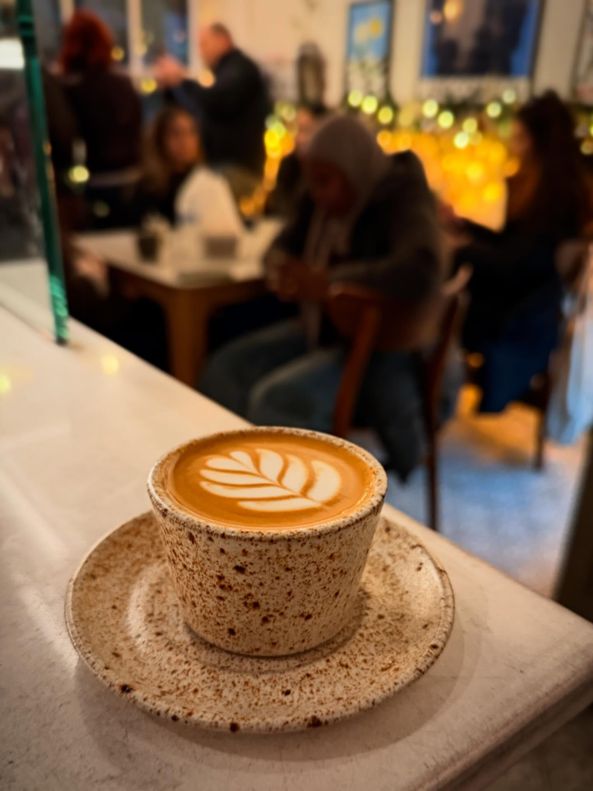
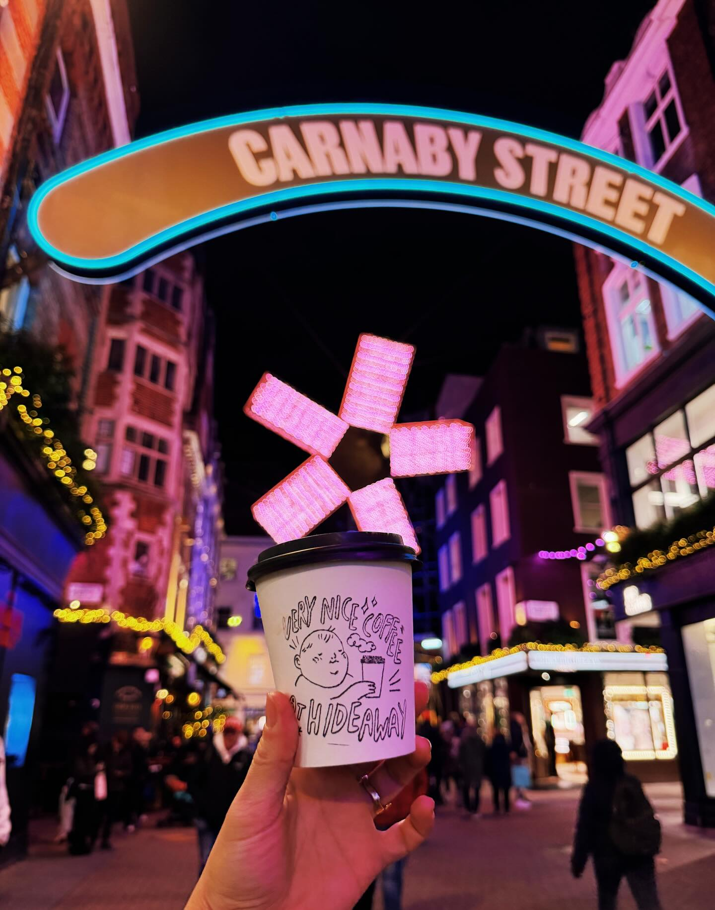
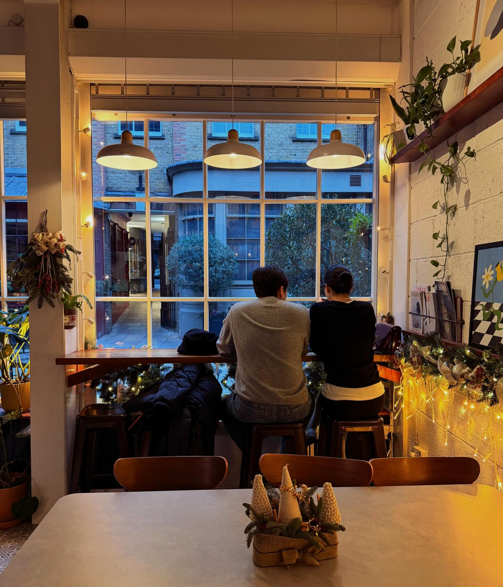
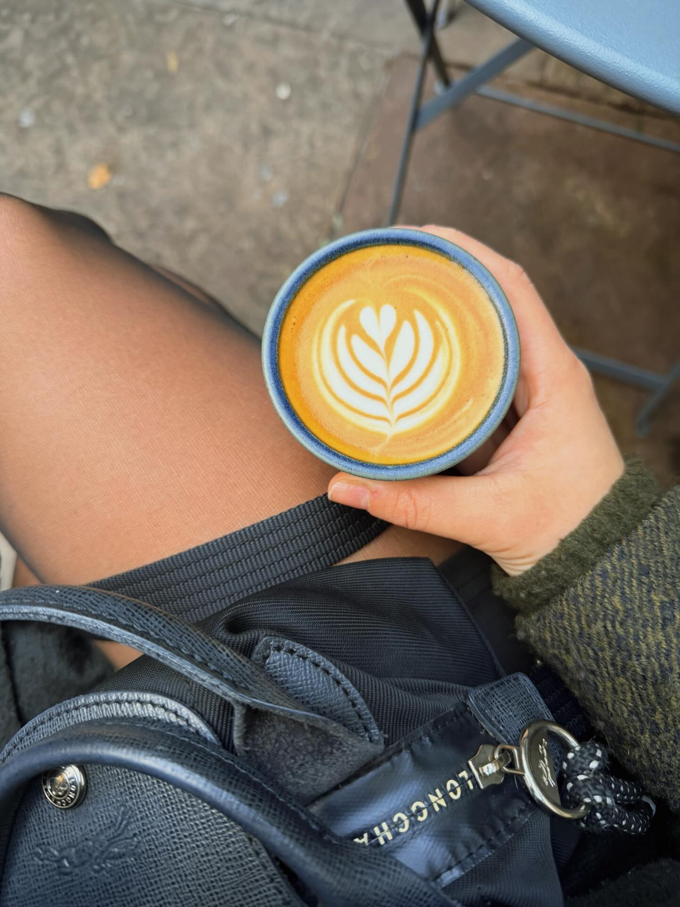

★★★★★
Best flat white in Soho by a mile. The courtyard bench is my WFH office three days a week.
Soho's best-kept secret — tucked down Farrier's Passage, off Brewer Street.
Their coffee is different to any you will or have tried around London.— recent visitor, 2025

One cup, one pour, one heart. Every morning since 2018.
One cup, one pour, one heart. Every morning since 2018.
Best flat white in Soho by a mile. The courtyard bench is my WFH office three days a week.
The heart on my latte came out perfect. Asked the barista her name so I could come back for her shift.
Tried every indie in W1. This is the one I send friends to when they ask "where actually has good coffee."
Hideaway opened in 2018 in a tiny corner of Smith's Court, between the chocolatier and the hairdresser. The door is easy to miss; the coffee is not. We pour small-batch beans from Origin, talk you through the blend if you ask, and keep the courtyard seating through every season.
The cups are hand-drawn. The hours are honest. The address is a secret everyone shares eventually.


Pendant light on brick. Pastries on the counter. The door keeps swinging — but the noise never quite finds you.
7 Smith's Court
Soho · London W1D 7DP
Through Farrier's Passage,
off Brewer Street.
